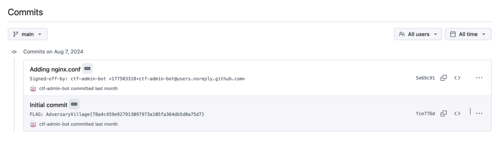

The challenge starts with a webpage (booking.adversary.city). From here, users have the option to sign up, log in with GitHub, and view the source code of the challenge by clicking on the “Follow on GitHub” link in the footer of the homepage. From the Git commit log, players can get the initial
Flag: AdversaryVillage{78a4c459e927913097973a105fa364db5d0a75d7}

After signing up or logging in, users only have regular user privileges. They can view listed
apartments, and in the apartment details, there is a booking section (dummy) and a comment
section.
By reading the source code, users can understand that comment input is sanitised using
Bleach (https://pypi.org/project/bleach/), but the app's Bleach configuration allows
tags and the onerror attribute for website usage. Additionally, users can notice that
booking.adversary.city has an /api/github/redirect endpoint ( Can view from the home page
itself). Combining these observations, users can trigger an XSS into the comment section to
obtain the admin token from GitHub OAuth.
With the GitHub token, users can log in (see Figure 3) as an admin on booking.adversary.city. From the admin section, users can retrieve the user flag and access an interactive terminal. USER Flag: AdversaryVillage{57e6839090fedff92cf232349559dff631636246}
From the Admin Panel, By clicking the interactive terminal button opens a terminal via
WebSocket, which is restricted to running Python binary only. The Python binary is
configured with CAP_SETUID (which allows a process to change its user ID). Users can
exploit this by running Python commands with root privileges, such as -c 'import os;
os.setuid(0); os.system("whoami")'. This way, users can obtain the root flag.
Flag: AdversaryVillage{57e6839090fedff92cf232349559dff631636246}